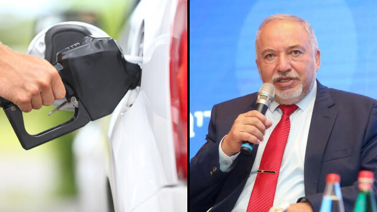
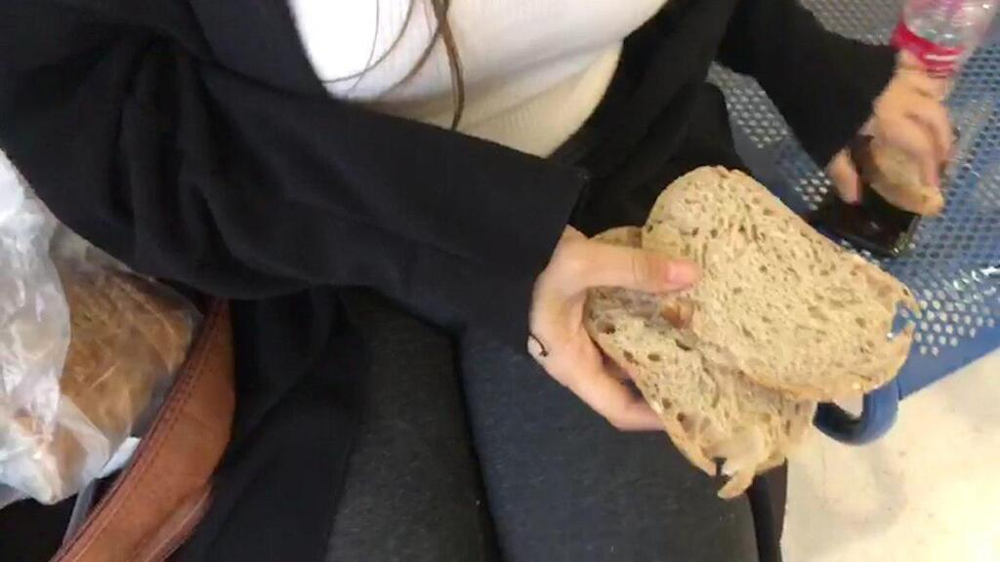
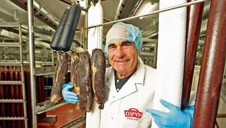

המשטרה נערכה לחודשיים נפיצים: "כל שנדרש ל'שומר החומות 2' זה ניצוץ"
הרמדאן, חג הפסח ומצעד הדגלים הם רק חלק מהמועדים שאותם סימנו במשטרה כבעלי פוטנציאל להבערת השטח. על רקע שרשרת הפיגועים, אמרה ראש אגף המבצעים במשטרה: "לא נוכל להגיב לכל דבר". ראש חטיבת המודיעין: "נערכים גם לפיגוע נקמה של ימין קיצוני"

עליית מחיר הדלק ב-1.40 שקל לליטר ב-12 החודשים האחרונים הובילה ללחץ מתמשך מצד חברים בממשלה להוריד את מס הבלו, והיום הכריז שר האוצר כי המס אכן יופחת למשך 3 חודשים.

רב בית החולים איכילוב: "מאבטחים צריכים לדאוג לביטחון, לא לחפש חמץ"
הרב אברהם רזניקוב לא מבין למה פותחים תיקים בחיפוש אחר חמץ בבתי החולים, טוען שזה רק מכשיל את המאבטחים – ומשוכנע שהפולמוס רק יגרום לאנשים לעקוף את האיסור.

רב בית החולים איכילוב: "מאבטחים צריכים לדאוג לביטחון, לא לחפש חמץ"
הרב אברהם רזניקוב לא מבין למה פותחים תיקים בחיפוש אחר חמץ בבתי החולים, טוען שזה רק מכשיל את המאבטחים – ומשוכנע שהפולמוס רק יגרום לאנשים לעקוף את האיסור.

רב בית החולים איכילוב: "מאבטחים צריכים לדאוג לביטחון, לא לחפש חמץ"
הרב אברהם רזניקוב לא מבין למה פותחים תיקים בחיפוש אחר חמץ בבתי החולים, טוען שזה רק מכשיל את המאבטחים – ומשוכנע שהפולמוס רק יגרום לאנשים לעקוף את האיסור.